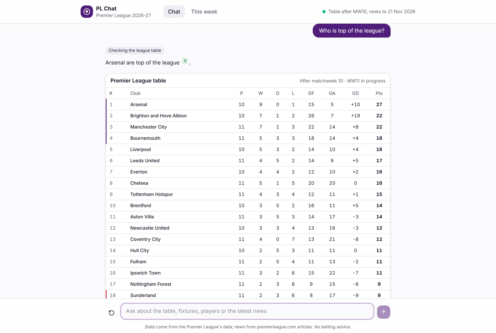
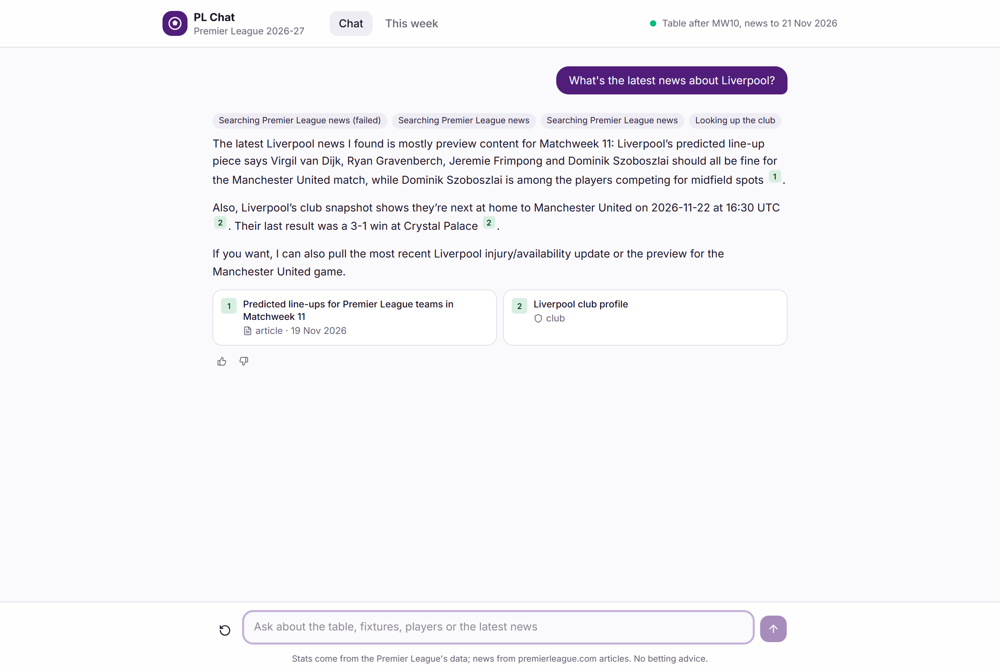
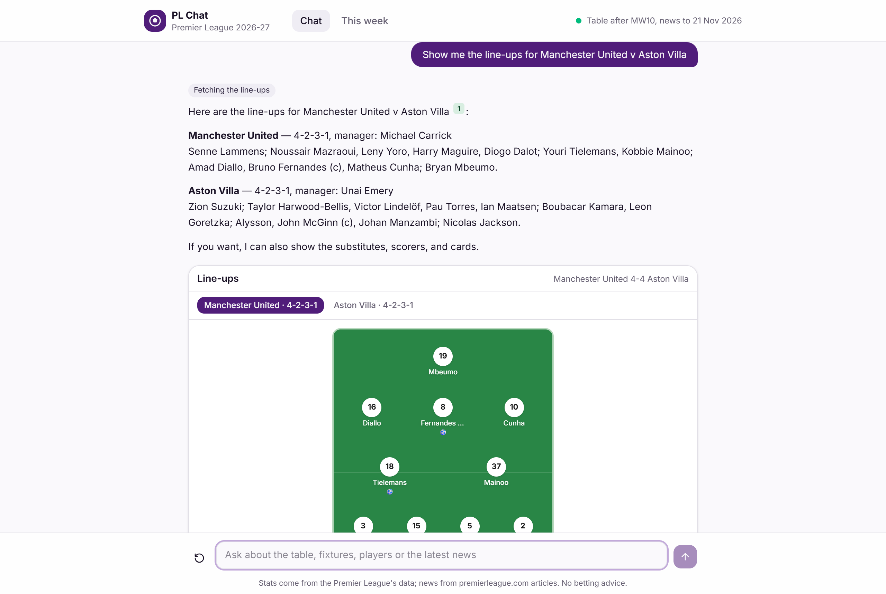
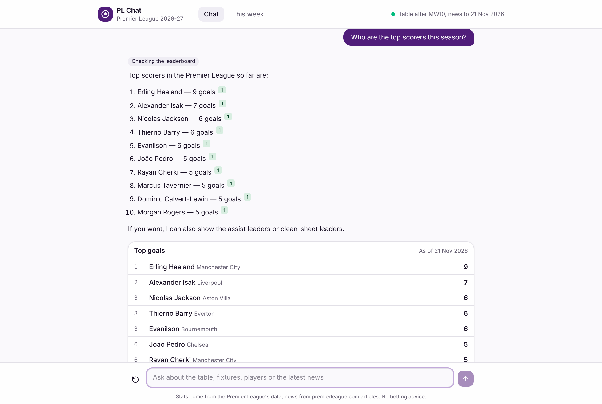
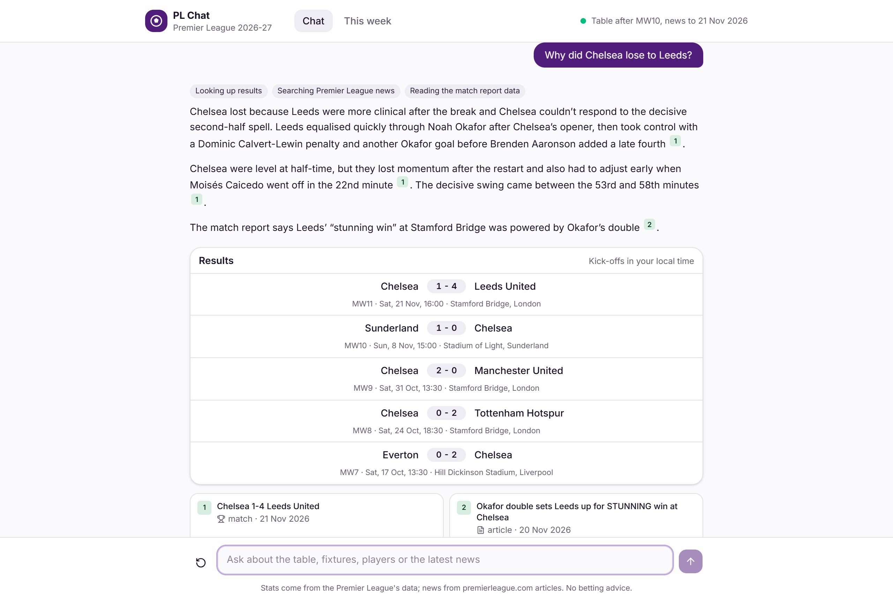
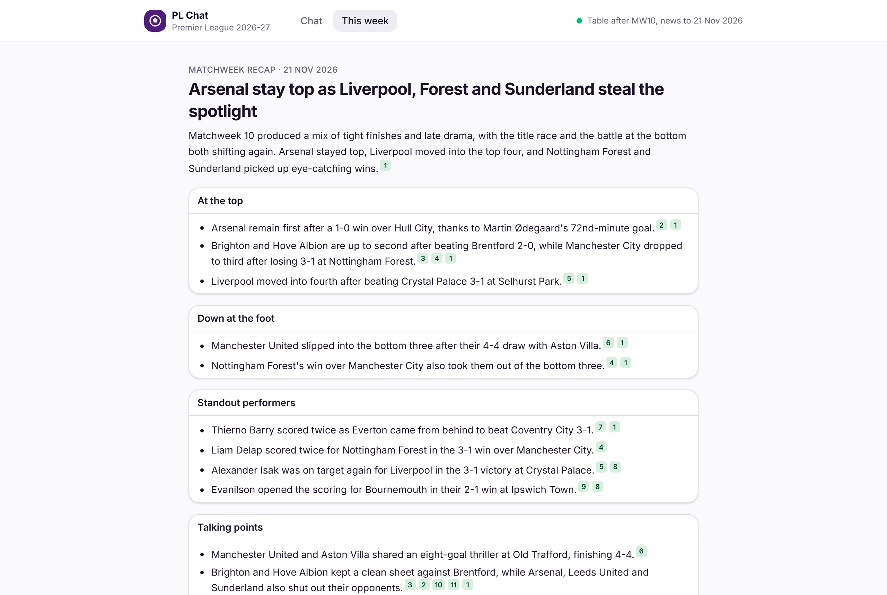
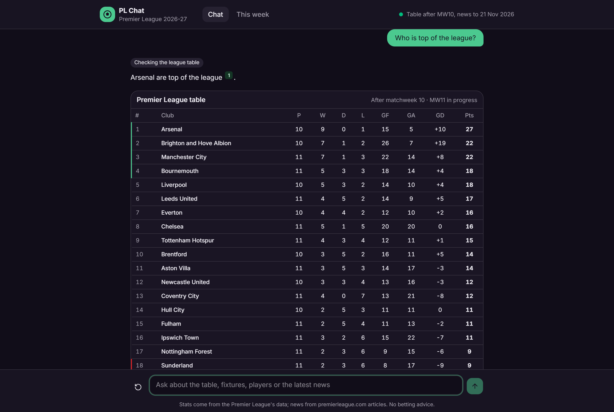
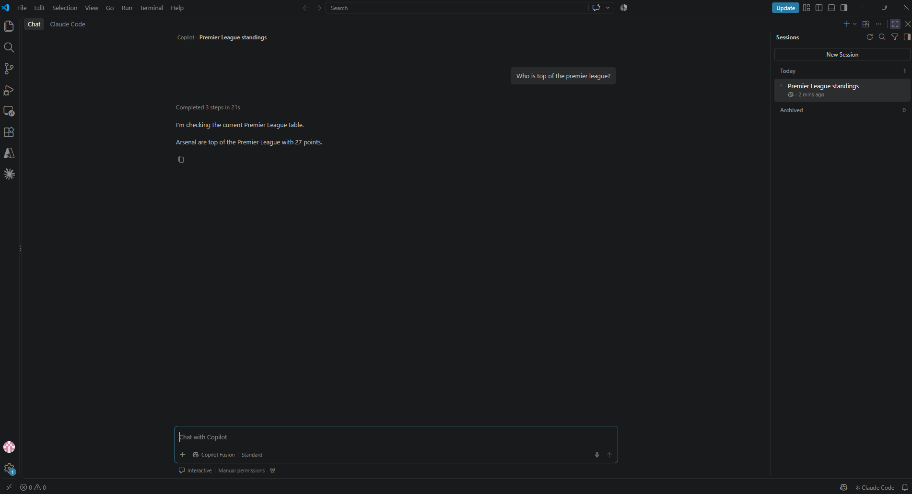
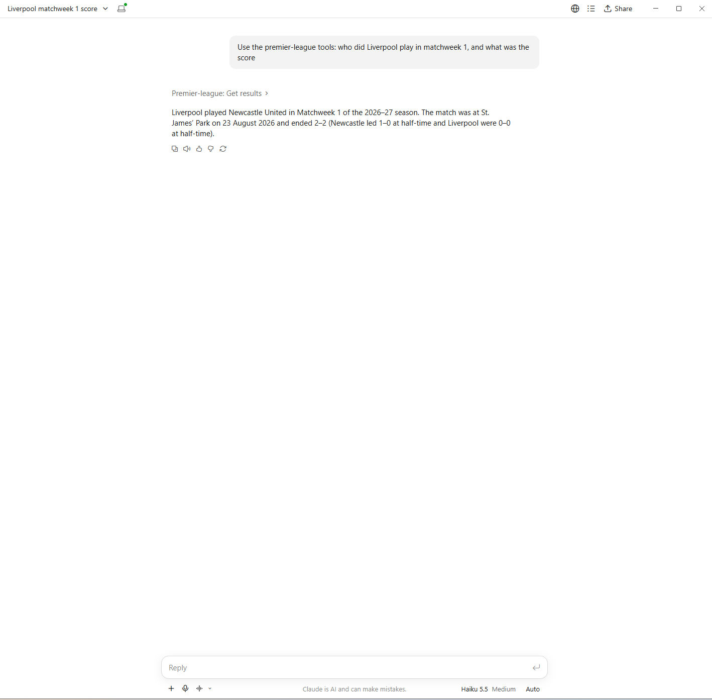

Showcase









Who is top of the league?
Arsenal are top of the league [1].
What's the latest news about Liverpool?
The latest Liverpool news I found is mostly preview content for Matchweek 11: Liverpool’s predicted line-up piece says Virgil van Dijk, Ryan Gravenberch, Jeremie Frimpong and Dominik Szoboszlai should all be fine for the Manchester United match, while Dominik Szoboszlai is among the players competing for midfield spots [1].
Also, Liverpool’s club snapshot shows they’re next at home to Manchester United on 2026-11-22 at 16:30 UTC [2]. Their last result was a 3-1 win at Crystal Palace [2].
If you want, I can also pull the most recent Liverpool injury/availability update or the preview for the Manchester United game.
Who are the top scorers this season?
Top scorers in the Premier League so far are:
1. Erling Haaland — 9 goals [1]
2. Alexander Isak — 7 goals [1]
3. Nicolas Jackson — 6 goals [1]
3. Thierno Barry — 6 goals [1]
3. Evanilson — 6 goals [1]
6. João Pedro — 5 goals [1]
6. Rayan Cherki — 5 goals [1]
6. Marcus Tavernier — 5 goals [1]
6. Dominic Calvert-Lewin — 5 goals [1]
6. Morgan Rogers — 5 goals [1]
If you want, I can also show the assist leaders or clean-sheet leaders.
Why did Chelsea lose to Leeds?
Chelsea lost because Leeds were more clinical after the break and Chelsea couldn’t respond to the decisive second-half spell. Leeds equalised quickly through Noah Okafor after Chelsea’s opener, then took control with a Dominic Calvert-Lewin penalty and another Okafor goal before Brenden Aaronson added a late fourth [1].
Chelsea were level at half-time, but they lost momentum after the restart and also had to adjust early when Moisés Caicedo went off in the 22nd minute [1]. The decisive swing came between the 53rd and 58th minutes [1].
The match report says Leeds’ “stunning win” at Stamford Bridge was powered by Okafor’s double [2].
Who should I bet on this weekend?
I can’t help pick bets or give betting tips, but I can help with neutral Premier League facts for this weekend, like fixtures, form, or team news.